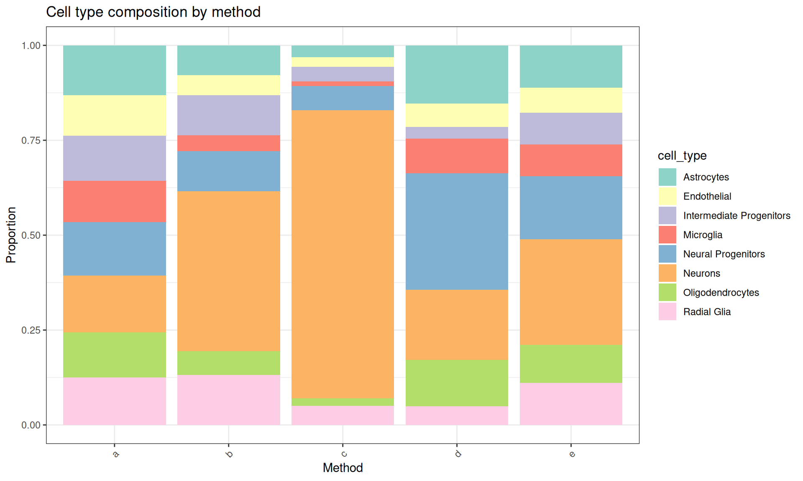

Last updated: 2026-01-16
Checks: 7 0
Knit directory: muse/
This reproducible R Markdown analysis was created with workflowr (version 1.7.1). The Checks tab describes the reproducibility checks that were applied when the results were created. The Past versions tab lists the development history.
Great! Since the R Markdown file has been committed to the Git repository, you know the exact version of the code that produced these results.
Great job! The global environment was empty. Objects defined in the global environment can affect the analysis in your R Markdown file in unknown ways. For reproduciblity it’s best to always run the code in an empty environment.
The command set.seed(20200712) was run prior to running
the code in the R Markdown file. Setting a seed ensures that any results
that rely on randomness, e.g. subsampling or permutations, are
reproducible.
Great job! Recording the operating system, R version, and package versions is critical for reproducibility.
Nice! There were no cached chunks for this analysis, so you can be confident that you successfully produced the results during this run.
Great job! Using relative paths to the files within your workflowr project makes it easier to run your code on other machines.
Great! You are using Git for version control. Tracking code development and connecting the code version to the results is critical for reproducibility.
The results in this page were generated with repository version 8980224. See the Past versions tab to see a history of the changes made to the R Markdown and HTML files.
Note that you need to be careful to ensure that all relevant files for
the analysis have been committed to Git prior to generating the results
(you can use wflow_publish or
wflow_git_commit). workflowr only checks the R Markdown
file, but you know if there are other scripts or data files that it
depends on. Below is the status of the Git repository when the results
were generated:
Ignored files:
Ignored: .Rproj.user/
Ignored: data/1M_neurons_filtered_gene_bc_matrices_h5.h5
Ignored: data/293t/
Ignored: data/293t_3t3_filtered_gene_bc_matrices.tar.gz
Ignored: data/293t_filtered_gene_bc_matrices.tar.gz
Ignored: data/5k_Human_Donor1_PBMC_3p_gem-x_5k_Human_Donor1_PBMC_3p_gem-x_count_sample_filtered_feature_bc_matrix.h5
Ignored: data/5k_Human_Donor2_PBMC_3p_gem-x_5k_Human_Donor2_PBMC_3p_gem-x_count_sample_filtered_feature_bc_matrix.h5
Ignored: data/5k_Human_Donor3_PBMC_3p_gem-x_5k_Human_Donor3_PBMC_3p_gem-x_count_sample_filtered_feature_bc_matrix.h5
Ignored: data/5k_Human_Donor4_PBMC_3p_gem-x_5k_Human_Donor4_PBMC_3p_gem-x_count_sample_filtered_feature_bc_matrix.h5
Ignored: data/97516b79-8d08-46a6-b329-5d0a25b0be98.h5ad
Ignored: data/Parent_SC3v3_Human_Glioblastoma_filtered_feature_bc_matrix.tar.gz
Ignored: data/brain_counts/
Ignored: data/cl.obo
Ignored: data/cl.owl
Ignored: data/jurkat/
Ignored: data/jurkat:293t_50:50_filtered_gene_bc_matrices.tar.gz
Ignored: data/jurkat_293t/
Ignored: data/jurkat_filtered_gene_bc_matrices.tar.gz
Ignored: data/pbmc20k/
Ignored: data/pbmc20k_seurat/
Ignored: data/pbmc3k.csv
Ignored: data/pbmc3k.csv.gz
Ignored: data/pbmc3k.h5ad
Ignored: data/pbmc3k/
Ignored: data/pbmc3k_bpcells_mat/
Ignored: data/pbmc3k_export.mtx
Ignored: data/pbmc3k_matrix.mtx
Ignored: data/pbmc3k_seurat.rds
Ignored: data/pbmc4k_filtered_gene_bc_matrices.tar.gz
Ignored: data/pbmc_1k_v3_filtered_feature_bc_matrix.h5
Ignored: data/pbmc_1k_v3_raw_feature_bc_matrix.h5
Ignored: data/refdata-gex-GRCh38-2020-A.tar.gz
Ignored: data/seurat_1m_neuron.rds
Ignored: data/t_3k_filtered_gene_bc_matrices.tar.gz
Ignored: r_packages_4.4.1/
Ignored: r_packages_4.5.0/
Untracked files:
Untracked: analysis/bioc.Rmd
Untracked: analysis/bioc_scrnaseq.Rmd
Untracked: analysis/likelihood.Rmd
Untracked: bpcells_matrix/
Untracked: data/Caenorhabditis_elegans.WBcel235.113.gtf.gz
Untracked: data/GCF_043380555.1-RS_2024_12_gene_ontology.gaf.gz
Untracked: data/arab.rds
Untracked: data/astronomicalunit.csv
Untracked: data/femaleMiceWeights.csv
Untracked: data/lung_bcell.rds
Untracked: m3/
Untracked: women.json
Unstaged changes:
Modified: analysis/isoform_switch_analyzer.Rmd
Note that any generated files, e.g. HTML, png, CSS, etc., are not included in this status report because it is ok for generated content to have uncommitted changes.
These are the previous versions of the repository in which changes were
made to the R Markdown (analysis/diversity.Rmd) and HTML
(docs/diversity.html) files. If you’ve configured a remote
Git repository (see ?wflow_git_remote), click on the
hyperlinks in the table below to view the files as they were in that
past version.
| File | Version | Author | Date | Message |
|---|---|---|---|---|
| Rmd | 8980224 | Dave Tang | 2026-01-16 | Diversity metrics |
This notebook demonstrates various diversity metrics. Install packages, if necessary.
install.packages("vegan")Creating a simulated cell type by organoid count matrix representing scRNA-seq data from organoids generated using 5 different methods.
set.seed(1984)
cell_types <- c(
"Neural Progenitors",
"Neurons",
"Astrocytes",
"Oligodendrocytes",
"Microglia",
"Endothelial",
"Radial Glia",
"Intermediate Progenitors"
)
count_matrix <- base::matrix(c(
450, 480, 420, 380, 350, 340, 400, 380,
200, 800, 150, 120, 80, 100, 250, 200,
100, 1200, 50, 30, 20, 40, 80, 60,
500, 300, 250, 200, 150, 100, 80, 50,
300, 500, 200, 180, 150, 120, 200, 150
), nrow = 8, ncol = 5, byrow = FALSE)
count_matrix [,1] [,2] [,3] [,4] [,5]
[1,] 450 200 100 500 300
[2,] 480 800 1200 300 500
[3,] 420 150 50 250 200
[4,] 380 120 30 200 180
[5,] 350 80 20 150 150
[6,] 340 100 40 100 120
[7,] 400 250 80 80 200
[8,] 380 200 60 50 150base::rownames(count_matrix) <- cell_types
base::colnames(count_matrix) <- letters[1:ncol(count_matrix)]
count_matrix a b c d e
Neural Progenitors 450 200 100 500 300
Neurons 480 800 1200 300 500
Astrocytes 420 150 50 250 200
Oligodendrocytes 380 120 30 200 180
Microglia 350 80 20 150 150
Endothelial 340 100 40 100 120
Radial Glia 400 250 80 80 200
Intermediate Progenitors 380 200 60 50 150Visualise the composition.
prop_matrix <- apply(count_matrix, 2, \(x) x/sum(x))
prop_df <- base::as.data.frame(prop_matrix) |>
tibble::rownames_to_column("cell_type") |>
tidyr::pivot_longer(-cell_type, names_to = "method", values_to = "proportion")
ggplot(prop_df, aes(x = method, y = proportion, fill = cell_type)) +
geom_bar(stat = "identity") +
theme_bw() +
theme(axis.text.x = ggplot2::element_text(angle = 45, hjust = 1)) +
labs(
title = "Cell type composition by method",
y = "Proportion",
x = "Method"
) +
scale_fill_brewer(palette = "Set3")
What it measures: Simply the number of different cell types present (with >0 cells).
Interpretation: Higher values indicate more cell types are present.
Key characteristic: Does NOT account for abundance - treats rare and common types equally.
richness <- vegan::specnumber(base::t(count_matrix))
richness_df <- base::data.frame(
Method = base::names(richness),
Richness = richness
)
richness_df Method Richness
a a 8
b b 8
c c 8
d d 8
e e 8What it measures: Both richness and evenness combined. Quantifies uncertainty in predicting the cell type of a randomly selected cell.
Interpretation: - Higher values indicate greater diversity - Ranges from 0 (one cell type only) to ln(S) (all types equally abundant) - Values typically between 1.5-3.5 for biological communities
Key characteristic: More sensitive to rare types than Simpson’s index.
shannon <- vegan::diversity(base::t(count_matrix), index = "shannon")
shannon_df <- base::data.frame(
Method = base::names(shannon),
Shannon = base::round(shannon, 3)
)
shannon_df Method Shannon
a a 2.073
b b 1.768
c c 0.992
d d 1.865
e e 1.968What it measures: The probability that two randomly selected cells are of different types.
Interpretation: - Ranges from 0 to 1 - Higher values indicate greater diversity - Less sensitive to rare species than Shannon
Key characteristic: Emphasizes dominant cell types more than Shannon.
simpson <- vegan::diversity(base::t(count_matrix), index = "simpson")
simpson_df <- base::data.frame(
Method = base::names(simpson),
Simpson = base::round(simpson, 3)
)
simpson_df Method Simpson
a a 0.873
b b 0.768
c c 0.413
d d 0.818
e e 0.842What it measures: The effective number of cell types. Represents the number of equally abundant types needed to produce the observed diversity.
Interpretation: - Minimum value of 1 (only one type) - Maximum value equals richness (S) when all types equally abundant - More intuitive than Simpson’s D
Key characteristic: Can be directly compared to species richness.
inv_simpson <- vegan::diversity(base::t(count_matrix), index = "invsimpson")
inv_simpson_df <- base::data.frame(
Method = base::names(inv_simpson),
InvSimpson = base::round(inv_simpson, 2)
)
inv_simpson_df Method InvSimpson
a a 7.90
b b 4.32
c c 1.70
d d 5.49
e e 6.33What it measures: How evenly cells are distributed among different types, independent of richness.
Interpretation: - Ranges from 0 to 1 - 1 indicates perfect evenness (all types equally abundant) - 0 indicates complete unevenness (one type dominates)
Key characteristic: Separates evenness from richness, useful for comparing samples with different numbers of cell types.
pielou <- shannon / base::log(richness)
pielou_df <- base::data.frame(
Method = base::names(pielou),
Pielou = base::round(pielou, 3)
)
pielou_df Method Pielou
a a 0.997
b b 0.850
c c 0.477
d d 0.897
e e 0.946What it measures: The proportion of the most abundant cell type.
Interpretation: - Ranges from 0 to 1 - Higher values indicate one type strongly dominates - Inverse of diversity (high dominance = low diversity)
Key characteristic: Simple, intuitive measure focusing only on the most abundant type.
berger_parker <- base::apply(count_matrix, 2, \(x) base::max(x) / base::sum(x))
bp_df <- base::data.frame(
Method = base::names(berger_parker),
BergerParker = base::round(berger_parker, 3)
)
bp_df Method BergerParker
a a 0.150
b b 0.421
c c 0.759
d d 0.307
e e 0.278Summary.
summary_df <- base::data.frame(
Richness = richness,
Shannon = base::round(shannon, 3),
Simpson = base::round(simpson, 3),
InvSimpson = base::round(inv_simpson, 2),
Pielou = base::round(pielou, 3),
BergerParker = base::round(berger_parker, 3)
)
summary_df Richness Shannon Simpson InvSimpson Pielou BergerParker
a 8 2.073 0.873 7.90 0.997 0.150
b 8 1.768 0.768 4.32 0.850 0.421
c 8 0.992 0.413 1.70 0.477 0.759
d 8 1.865 0.818 5.49 0.897 0.307
e 8 1.968 0.842 6.33 0.946 0.278
sessionInfo()R version 4.5.0 (2025-04-11)
Platform: x86_64-pc-linux-gnu
Running under: Ubuntu 24.04.3 LTS
Matrix products: default
BLAS: /usr/lib/x86_64-linux-gnu/openblas-pthread/libblas.so.3
LAPACK: /usr/lib/x86_64-linux-gnu/openblas-pthread/libopenblasp-r0.3.26.so; LAPACK version 3.12.0
locale:
[1] LC_CTYPE=en_US.UTF-8 LC_NUMERIC=C
[3] LC_TIME=en_US.UTF-8 LC_COLLATE=en_US.UTF-8
[5] LC_MONETARY=en_US.UTF-8 LC_MESSAGES=en_US.UTF-8
[7] LC_PAPER=en_US.UTF-8 LC_NAME=C
[9] LC_ADDRESS=C LC_TELEPHONE=C
[11] LC_MEASUREMENT=en_US.UTF-8 LC_IDENTIFICATION=C
time zone: Etc/UTC
tzcode source: system (glibc)
attached base packages:
[1] stats graphics grDevices utils datasets methods base
other attached packages:
[1] vegan_2.7-1 permute_0.9-8 lubridate_1.9.4 forcats_1.0.0
[5] stringr_1.5.1 dplyr_1.1.4 purrr_1.0.4 readr_2.1.5
[9] tidyr_1.3.1 tibble_3.3.0 ggplot2_3.5.2 tidyverse_2.0.0
[13] workflowr_1.7.1
loaded via a namespace (and not attached):
[1] sass_0.4.10 generics_0.1.4 lattice_0.22-6 stringi_1.8.7
[5] hms_1.1.3 digest_0.6.37 magrittr_2.0.3 timechange_0.3.0
[9] evaluate_1.0.3 grid_4.5.0 RColorBrewer_1.1-3 fastmap_1.2.0
[13] Matrix_1.7-3 rprojroot_2.0.4 jsonlite_2.0.0 processx_3.8.6
[17] whisker_0.4.1 ps_1.9.1 promises_1.3.3 mgcv_1.9-1
[21] httr_1.4.7 scales_1.4.0 jquerylib_0.1.4 cli_3.6.5
[25] rlang_1.1.6 splines_4.5.0 withr_3.0.2 cachem_1.1.0
[29] yaml_2.3.10 parallel_4.5.0 tools_4.5.0 tzdb_0.5.0
[33] httpuv_1.6.16 vctrs_0.6.5 R6_2.6.1 lifecycle_1.0.4
[37] git2r_0.36.2 fs_1.6.6 MASS_7.3-65 cluster_2.1.8.1
[41] pkgconfig_2.0.3 callr_3.7.6 pillar_1.10.2 bslib_0.9.0
[45] later_1.4.2 gtable_0.3.6 glue_1.8.0 Rcpp_1.0.14
[49] xfun_0.52 tidyselect_1.2.1 rstudioapi_0.17.1 knitr_1.50
[53] farver_2.1.2 nlme_3.1-168 htmltools_0.5.8.1 labeling_0.4.3
[57] rmarkdown_2.29 compiler_4.5.0 getPass_0.2-4